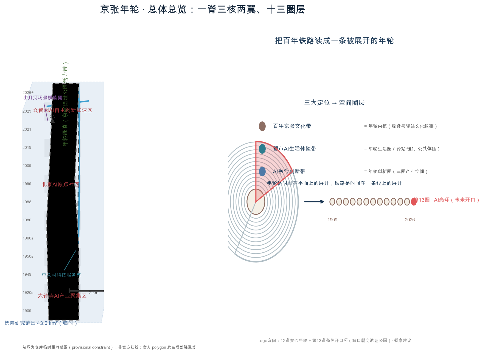
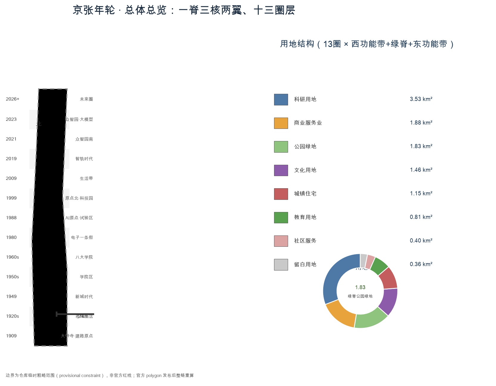
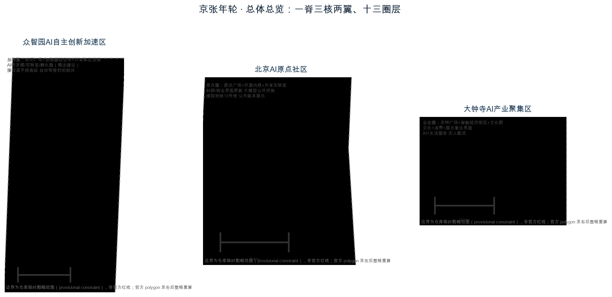
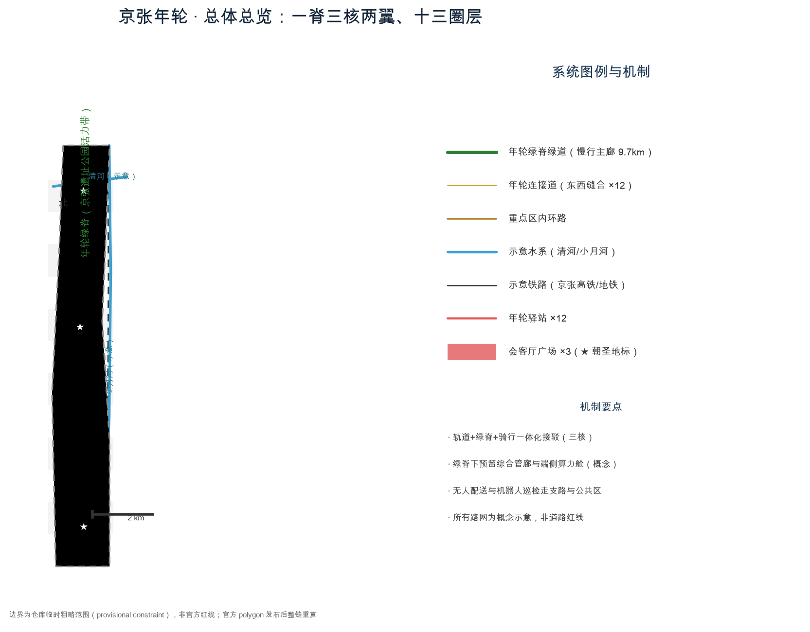
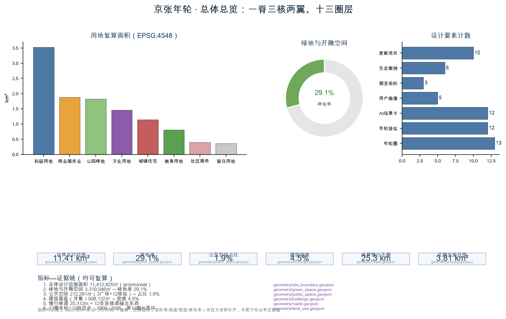

JINGZHANG RINGS: An Unrolled Century on One Line — Urban Design Proposal for the Centennial Jing-Zhang AI Innovation Belt
Reading the century-old Jing-Zhang Railway as an unrolled annual ring: 13 rings organize a 9 km corridor from south (1909) to north (2026), with one green spine, three cores, two wings, and thirteen ring stations, while the 13th AI ring opens toward the future as an experienceable, recalculable, evolvable AI innovation belt.
JINGZHANG RINGS: An Unrolled Century on One Line
Design Basis and Source List
This proposal is an open co-creation deliverable by an AI agent for the Centennial Jing-Zhang AI Innovation Belt urban design open call. Every spatial judgement is generated from the repository's public materials and temporary rough boundaries, and is by definition a conceptual suggestion, reference scheme, or material for professional teams to deepen — it does not replace statutory planning and is not an approved government conclusion 来源 来源.
The source list:
- Qualification pre-announcement (Beijing Municipal Commission of Planning and Natural Resources, Haidian Branch, 2026-05-09): the controlling basis for the three scope levels, three key areas, design tasks, and deliverable depth 来源.
- Agent open-call taskbook digest (user-provided cleared material): three positionings, five functions, three areas and two wings, six agent tasks, and the boundary clause 来源.
- Site package (brief/site-package/): taskbook, allowed design space, enums, planning limits, standard snapshots, and the source registry 来源.
- Provisional boundaries: the announcement provides no official polygons, so this proposal uses the repository's temporary ranges, explicitly labelled "provisional constraint"; the full evidence chain will be recalculated when official redlines are released 来源.
- Professional standard snapshots: Urban Design Measures, Control Detailed Planning Measures, and the MNR Land-Use Classification Guide 标准.
Data gaps and handling principle: regulatory indicators (FAR, height, density, green ratio, setbacks), road redlines, ownership, municipal utilities, and protection zones are all missing and are treated as "pending official data"; no value is presented as an approved conclusion 标准. Land-use classification follows the national territorial planning logic 标准.
Three-Level Scope Framework
The three levels answer "what to study, what to design, and what to deepen":
- Coordinated research area (43.6 km², bounded by North 5th Ring Road, Jingzang Expressway, Xizhimen Outer Street, and Wanquanhe Road): carries research on a world-class AI innovation ecosystem, the three-area-two-wing synergy, and future city forms 指标.
- Overall design area (11.4 km², 1–2 km around the Jing-Zhang heritage park): regulatory-plan-depth renewal design, forming the annual-ring land-use structure, mobility, and blue-green systems 指标.
- Key detailed-design area (368.4 ha): fine-grained design for the Zhongzhiyuan AI acceleration area, the Beijing AI Origin Community, and the Dazhongsi AI industry cluster 指标 空间数据.
The polygons of the three key areas are all repository-provided temporary constraint ranges (provisional constraint); they must not be treated as official redlines or precise-area bases. When official polygons are released, all area metrics and this design layer must be recalculated end-to-end 来源 [assumption:A-BOUNDARY-001]. All areas and ratios in this proposal are recomputed from the submitted GeoJSON in EPSG:4548; prose numbers never replace geometric facts 指标.

Coordinated Research Area: Industry and Future City Research
Belt concept: JINGZHANG RINGS
Primary name "京张年轮 / JINGZHANG RINGS" (subtitle "Annual-Ring AI Innovation Belt"). Naming logic: the Jing-Zhang Railway (1909) was the first trunk railway designed and built by Chinese engineers without foreign capital — its "autonomy" spirit continues through Zhongguancun's independent innovation into today's autonomous AI 标准. An annual ring is time unfolded on a plane; a railway is time unfolded on a line. Treating the 9 km corridor as an unrolled century ring turns "readable history" into "walkable time". The naming system is organized by "rings": one belt (JINGZHANG RINGS) → three cores (origin/acceleration/industry) → two wings (Zhongguancun service wing and Xiaoyuehe scenario wing) → thirteen ring stations → scenario rings 深度.
Logo direction: twelve solid annual-ring circles plus a bright, open 13th ring whose gap points toward the heritage park — "history closes the loop, the future opens it"; it can be extended with station symbols, rail sections, and signal colors (green/yellow/red) into signage and event systems 深度 来源. This is a conceptual direction; the official identity requires cleared assets and professional deepening.
Three positionings, five functions, three areas and two wings
The three positionings map onto space: the century Jing-Zhang culture belt = the ring's inner core (green spine and station narratives); the urban AI life-experience belt = the ring's living circle (stations, slow mobility, public experience); the AI-integrated innovation belt = the ring's innovation circle (three industrial rings) 来源.
The five functions land in space: the AI full-stack independent innovation system → Zhongzhiyuan acceleration ring; the world-class AI innovation ecosystem → AI Origin Community ring; the AI+ scenario-empowerment paradigm → Xiaoyuehe scenario wing; the intelligent vibrant AI city → the ring green spine and thirteen stations; global AI governance discourse → the Origin Community open ledger and ring honor system 来源.
The three-area-two-wing synergy loop: origin ring (ecosystem source) → acceleration ring (outcome conversion) → industry ring (market validation), while the Zhongguancun service wing (capital, IP, global factors) and the Xiaoyuehe scenario wing (real scenarios, test data, user feedback) form a "supply–feedback" double loop 来源.
Global AI innovation ecosystem cases (6)
1. Stanford Research Park, Silicon Valley: university–park–capital adjacency, translated into a "30-minute walking circle from universities to the Origin Community" mechanism 深度. 2. Kendall Square, Boston: open labs and shared validation facilities lower R&D thresholds, translated into Zhongzhiyuan's shared validation facility cluster. 3. King's Cross, London: railway heritage renewed as a tech district, translated into the "heritage park + smart economy" mending logic 深度. 4. one-north, Singapore: tiered "test–display–live" mixed uses, translated into mixed-function ratio suggestions for the three rings. 5. Shenzhen Bay Science Park: anchor firms pulling industry chains, translated into Dazhongsi's "AI-native formats" attraction logic. 6. Hangzhou West Sci-Tech Innovation Corridor: corridor innovation belt coupled with rail transit, translated into this proposal's "green spine + rail + station" spatial prototype 深度.
These are conceptual translations of public information and constitute no company commitments or industrial targets; the mechanisms are detailed in compliance_matrix.json and sources.json 来源.

Overall Design Area: Urban Renewal and Regulatory-Plan-Level Urban Design
For the 1–2 km belt around the Jing-Zhang heritage park, the proposal forms an "one spine, three cores, two wings, thirteen ring layers" spatial structure within the provisional boundary 空间数据 深度:
- One spine: the Ring Green Spine — a continuous park belt (1401) along the heritage park, from the Qinghe river in the north to Xizhimen Outer Street in the south, about 9.7 km 指标 空间数据.
- Three cores: the Dazhongsi smart-economy core (industry ring), the AI Origin ecological core (origin ring), and the Zhongzhiyuan autonomy core (acceleration ring) 空间数据.
- Two wings: the Zhongguancun technology-service wing (innovation-service belt east of the study area) and the Xiaoyuehe scenario-empowerment wing (open scenario belt west of it).
- Thirteen ring layers: 13 annual-ring land bands, each organized as "west function band + green spine + east function band"; the south end is the 1909 origin, the north end the 2026 agent year and the 13th future ring of reserve land 空间数据.
The renewal framework follows "retain / renovate / new-build classification + ring-based incremental growth": the green spine and heritage elements are retained and activated first; existing research institutes and communities are renewed mainly through functional overlay and interface updates; new bulk concentrates in the Zhongzhiyuan acceleration ring; all demolition/renovation conclusions are methodological suggestions pending ownership and engineering conditions 深度 [assumption:A-OWNERSHIP-001].
Regulatory indicators (building volume, FAR, height, density, green ratio, setbacks) are missing and are handled as "pending official data"; this proposal issues no approved values 指标 [assumption:A-CONTROLS-001]; land-use zones are design suggestions, not statutory zoning 标准.
Detailed Design of Key Areas
Each key area is designed as "positioning + spatial structure + building renewal + mobility + public space + AI scenarios + implementation risk"; all boundaries are provisional constraints, so the following are directional designs to be recalculated when official polygons arrive 空间数据 深度.
Zhongzhiyuan AI Autonomous Innovation Acceleration Area (about 192.1 ha, rings 11–13)
Positioning: the AI full-stack independent innovation system and the 13th future bright ring 指标. Structure: "bright-ring plaza — accelerator complex — shared validation facility cluster" as its core, with research land (0802) dominating the east-west function bands and reserve land (16) in the north for future R&D units 空间数据. Buildings: new AI R&D buildings, labs, and incubators are conceptual suggestions pending regulatory conditions 指标. Mobility: an inner loop connects Changping line south extension and the 5th Ring, with spine branches inside 空间数据. Public space: the Ring-13 bright plaza (about 26,000 m²) hosts the annual "Ring Festival" 空间数据. AI scenarios: closed-track autonomous driving tests, embodied-robot validation, and shared compute experiments. Risk: ownership and industrial relocation conditions are unconfirmed.
Beijing AI Origin Community (about 104.3 ha, rings 6–8)
Positioning: the world-class AI innovation ecosystem origin and a carrier of global AI governance discourse 指标. Structure: origin plaza — open-source core — shared laboratory cluster, matching the historical rings from the 1980 Electronics Street to the 1999 Zhongguancun Science Park 空间数据. Buildings: interface updates and functional overlays activate existing research and commercial buildings. Mobility: the spine narrows into an "origin pedestrian street" connecting Metro Line 13 空间数据. Public space: the Ring-origin plaza and the "open-source core" landmark. AI scenarios: a public foundation-model evaluation sandbox and the city-agent public ledger. Risk: ownership coordination between residential interfaces and research functions is the main challenge.
Dazhongsi AI Industry Cluster (about 72.0 ha, rings 1–2)
Positioning: AI-native new formats and the cultural origin of Jing-Zhang 指标. Structure: Yongzhong Plaza — smart-economy block — Dazhongsi cultural cluster (0803), mixing commercial services (05) and culture 空间数据. Buildings: mainly retrofit and upgrading into "culture + consumption + display" composite interfaces. Mobility: connects Xizhimen Outer Street and Xueyuan Road; the "1909 Origin Station" anchors the green spine's south end. Public space: Yongzhong Plaza and the first of the twelve ring stations 空间数据. AI scenarios: AI-assisted living services, unmanned delivery, and smart retail. Risk: the boundary between heritage protection (Dazhongsi) and commercial development must be cleared and confirmed.

AI Innovation Ecosystem, Personas, and AI+ Scenarios
Talent and user personas (5)
1. AI researchers/engineers: need compute, data, validation facilities, and 24-hour open labs. 2. Startup teams / SMB owners: need incubators, open scenarios, compliance, and financing services. 3. University faculty and students: need internships, joint research, and public classrooms. 4. District residents and families: need daily services, health, education, and park experience. 5. Global visitors / developers / professional buyers: need landmarks, tours, events, and an international community.
AI scenario cards (12, of which 3 are industry test/validation scenarios)
| # | Scenario | Spatial mapping | Users | Privacy boundary | Human review | Operator | Layer |
|---|---|---|---|---|---|---|---|
| 1 | AI-assisted mobility & slow-walk navigation | Ring green spine | Residents/visitors | No personal trajectory collection | Manual right-of-way ruling | District transport + operator | ROAD/spine |
| 2 | AI health services | Community service facilities | Residents | Health data stays in community | Physician review | Hospitals + community | 0702 |
| 3 | AI co-learning classrooms | Education land | Students/teachers | Class data anonymized | Teacher review | Universities + platforms | 0804 |
| 4 | AI legal consultation | Service-wing gateway | Entrepreneurs | Encrypted records | Lawyer review | Law firms + platform | 05 |
| 5 | AI daily-life services | Dazhongsi block | Residents | Anonymized | Provider review | Merchant alliance | 05 |
| 6 | Unmanned delivery | Block branches | Residents/merchants | No private-space access | Traffic enforcement | Delivery platforms | ROAD |
| 7 | Robot patrol | Public spaces | Managers | Public-area only | Security review | Property managers | PUBLIC |
| 8 | Autonomous driving test (industry test) | Zhongzhiyuan closed track | Automakers/developers | Anonymized test data | Safety officer + traffic authority | Test operator | 0802 |
| 9 | Embodied-robot validation (industry test) | Xiaoyuehe scenario wing | Robot firms | Anonymized human data | Scenario host | Validation operator | 16/1402 |
| 10 | Foundation-model public evaluation (industry test) | Origin evaluation sandbox | Model developers | Public evaluation sets | Evaluation committee | Open-source community | 0802 |
| 11 | City-agent public ledger | Origin plaza | All citizens | Read-only public summary | Independent audit | Governance body | PUBLIC |
| 12 | Ring-station smart services | 13 stations | All | No session retention | Service-desk review | Station operator | PUBLIC |
All scenarios comply with data minimization, opt-out, rollback, human review, and front-loaded privacy boundaries; immature technologies are not presented as fully deployable 来源 深度. The three industry test scenarios are "pilot suggestions", not approved operations [assumption:A-MUNICIPAL-001].

Land Use, Building Scale, and Retain-Renovate-Demolish Strategy
The land-use layout is a "13 rings × (west function band + green spine + east function band)" partition covering the full submitted boundary without gaps or overlaps 空间数据 深度. Recomputed areas: research (0802) ≈ 3,527,000 m², commercial services (05) ≈ 1,884,000 m², culture (0803) ≈ 1,462,000 m², residential (0701) ≈ 1,146,000 m², education (0804) ≈ 810,000 m², community services (0702) ≈ 402,000 m², spine park green (1401) ≈ 1,826,000 m², reserve (16) ≈ 356,000 m² 指标 指标.
Building footprint (union) ≈ 508,000 m², building density ≈ 4.5% 指标 指标; footprints are conceptual representative basemaps, not surveys 空间数据. Retain/renovate/demolish is classified as "retain the spine and heritage, renovate research/community interfaces, new-build the three cores' increments, reserve future units" — all methodological, pending ownership and engineering conditions [assumption:A-OWNERSHIP-001]. Total floor area and FAR remain unknown for lack of regulatory conditions 指标.
Transport, Rail, Municipal Infrastructure, and Public Services
- Slow-mobility main corridor: the ring green spine greenway of about 9.7 km linking 13 stations and the three cores 指标 空间数据.
- Lateral mending: 12 ring connector roads stitch the east and west function bands at grade or over the spine, repairing the century-long east–west severance caused by the railway 空间数据 深度.
- Rail integration: Zhongzhiyuan connects to the Changping line south extension (schematic), the AI Origin to Metro Line 13 (schematic), and Dazhongsi to existing rail; each core hosts an integrated "rail + spine + cycling" transfer point 空间数据.
- Municipal & new infrastructure: a utility tunnel under the spine with distributed energy pods and edge-compute nodes (conceptual); conventional municipal capacity and underground pipelines require professional assessment [assumption:A-MUNICIPAL-001] 深度.
- Public services: innovation service platforms (testing, compliance, financing), talent life services (talent apartments, health, education), and public living rooms are arranged along the stations 指标.

Blue-Green Network, Public Space, and Urban Character
Blue-green system: schematic Qinghe (north) and Xiaoyuehe (east) water lines plus the spine and eco buffer green (1402) form a "one spine, two waters, multiple buffers" network; green and open space ≈ 3,319,000 m², green ratio ≈ 29.1% 指标 空间数据. Public space ≈ 212,000 m², ratio ≈ 1.9%, including three lounge plazas and twelve ring stations 指标 空间数据.
Three AI pilgrimage landmarks (conceptual suggestions, not approved construction):
1. Yongzhong · city-rhythm landmark (Dazhongsi): borrowing the Yongle Bell's "timekeeping" imagery, a visible and audible "city-rhythm clock" publishes the belt's shared clock and AI status signals 深度. 2. Ring Origin · open-source core (AI Origin Community): an "open-source first ring" sculpture and honor-ring wall carrying the honor-display system for open-source contributors, developers, and governance 来源. 3. The 13th bright ring (Zhongzhiyuan): a ring-shaped viewing and annual-event landmark where the 13th ring "grows out" as a physical segment 空间数据.
The public-space component library (6 types): station modules, shared labs, reversible AI test fences, digital signage, smart seating and lighting, and infrastructure pods — all demountable, upgradeable, auditable components 深度. The urban character follows a technical-rational style inspired by rails, sleepers, and signal colors; cultural spaces avoid over-glamorization 标准.
Renewal Projects, Implementation Policy, and Phasing
Near term (2026–2029, origin revival): Dazhongsi smart-economy block, Yongzhong Plaza, Ring-origin Plaza with open-source core, AI Origin shared laboratory cluster, and 3 model ring stations 指标 空间数据. Mid term (2029–2032, ecosystem growth): spine mending bridges, remaining stations, the Xiaoyuehe scenario validation corridor, and the Zhongguancun service-wing gateway 指标. Long term (2032–2036, bright-ring growth): Zhongzhiyuan accelerator complex, the 13th bright-ring landmark, and autonomous-driving / embodied-robot validation facilities 指标. Ten renewal project types are proposed with a "government coordination + platform company + community/developer co-governance" implementation model; policy suggestions (scenario opening, data sandboxes, public ledger) are deepening directions 指标 来源.
Global AI events and long-term operation (conceptual suggestions): the annual "Ring Festival" (one theme per ring), developer co-creation camps, scenario open days, the public-ledger annual report, and the international "Jing-Zhang Time" narrative; conversion pathways for talent, firms, and developers are explicit so the operation is more than slogans 深度.
Metrics, Area Recalculation, and Compliance Matrix
Core indicators and their design meaning: green ratio ≈ 29.1% supports talent life and public health; public-space ratio ≈ 1.9% (plus the station system) supports innovation exchange and youth-friendliness; building density ≈ 4.5% reflects low-density sci-tech space supply; 13 rings and 13 stations translate "historical readability" into walkable metrics 指标 指标 指标.
Area recalculation: overall design area 11,412,825 m² (provisional), coordinated research area 43,609,233 m² (provisional), key areas total 3,692,893 m² (provisional) — consistent with the announced text values (11.4 km² / 43.6 km² / 368.4 ha) but carrying provisional-boundary error; recalculation is mandatory when official polygons arrive 指标 [assumption:A-BOUNDARY-001]. Task coverage: see compliance_matrix.json (all announcement 1.3/1.4/1.5 and agent.1–6 items), standard_matrix.json (5 mandatory standards), and design_depth_matrix.json (15 depth items all complete) 深度.
Risk, Copyright, and Compliance
- Boundary risk: all boundaries are temporary constraint ranges; no redline, area, or planning-control conclusion may cite this proposal 来源.
- Data risk: only public or cleared material is used; OSM is background only and never formal boundary; commercial map tiles are forbidden as submission data 来源.
- Compliance boundary: no regulatory-plan approval, no parcel-level demolition/renovation conclusions, no engineering feasibility judgements, no ownership or investment estimates; all events, attraction, and policy wording are conceptual 来源 标准.
- Privacy and ethics: every scenario card front-loads privacy boundaries and human review; excessive surveillance is prohibited 深度.
- Copyright: this is an open co-creation; attribution and license follow
report/copyright_statement.md; fonts, images, persons, and corporate marks must be cleared before formal use [assumption:A-CONTROLS-001].
References
1. Qualification Pre-Announcement for the Centennial Jing-Zhang AI Innovation Belt Urban Design International Open Call (Beijing Municipal Commission of Planning and Natural Resources, Haidian Branch, 2026-05-09). 2. Agent Open-Call Taskbook Digest for the Centennial Jing-Zhang AI Innovation Belt (user-provided cleared material). 3. Urban Design Measures (MOHURD). 4. Measures for the Formulation and Approval of Control Detailed Planning for Cities and Towns (MOHURD). 5. Guidelines for the Classification of Land and Sea Use in Territorial Spatial Surveys, Planning, and Use Control (MNR, 2023). 6. Repository site package: design taskbook, allowed design space, enums, planning limits, standard snapshots, and the source registry. 7. Repository provisional boundaries and their documentation. 8. Peer proposal catalog (via read_peer_proposals) used to avoid concept collisions and borrow shared public methods 来源.